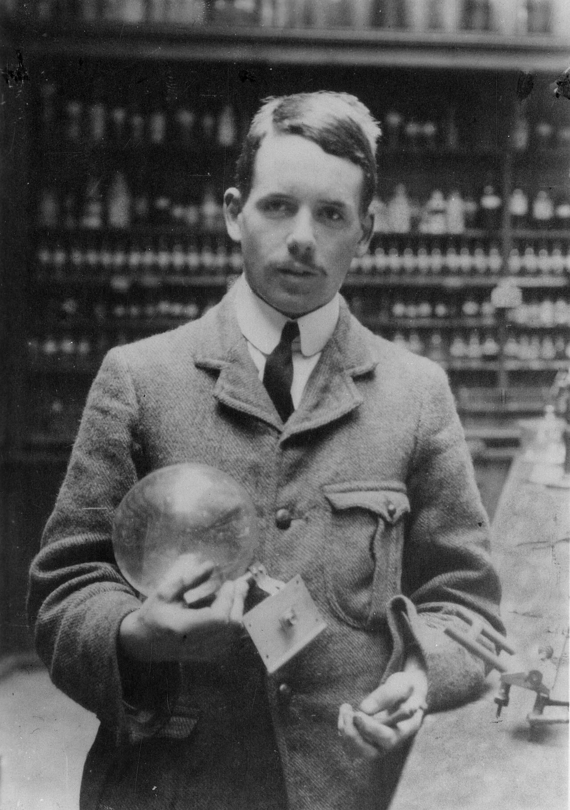
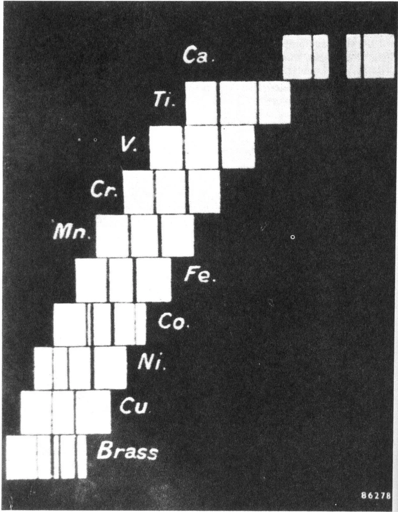
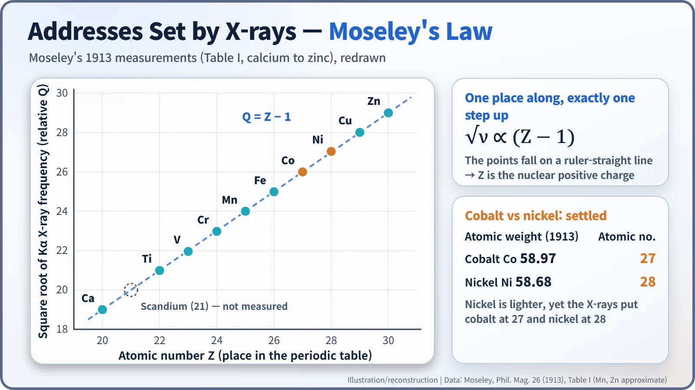
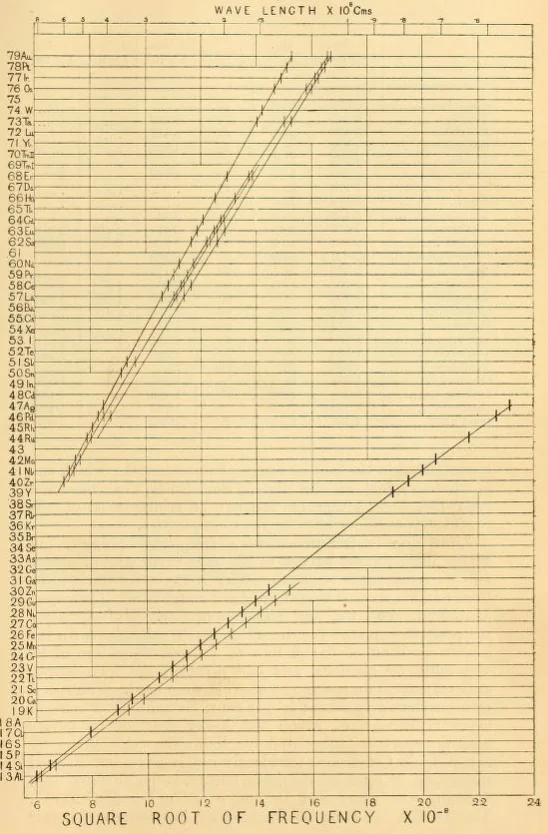
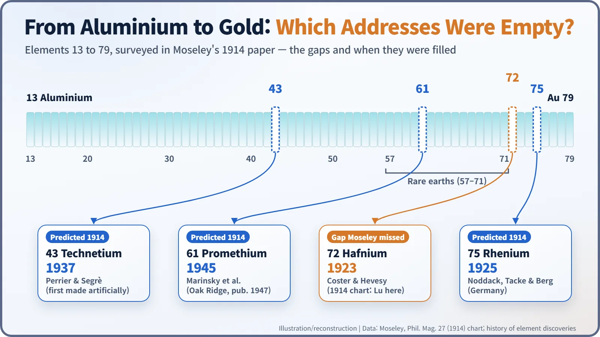

Nuclear History · 028
Weigh Them and You Get It Wrong — Henry Moseley Gives Every Element Its Atomic Number (1913)
A row of X-ray photographs that stepped like a staircase turned the periodic table's place numbers into a physical quantity: the atomic number.
In December 1913, 26-year-old Henry Moseley showed that the X-rays given off by each element step up by a regular amount from one element to the next. The step counts the positive charge on the atomic nucleus, so the periodic table's place numbers became a physical quantity: the atomic number. His survey also revealed which elements were still missing.
A quick quiz
Cobalt or nickel: which atom is heavier? The answer is cobalt, by a whisker. Yet in the periodic table cobalt is element 27 and nickel is element 28, so the lighter nickel comes after it. If elements are supposed to line up by weight, that makes no sense. In 1913 a 26-year-old English physicist cleared up the puzzle with a handful of X-ray photographs. His name was Henry Moseley (1887–1915).

A numbering with no meaning
When Dmitri Mendeleev built his periodic table in 1869, he ordered the elements mainly by atomic weight. But where the chemistry did not fit, he boldly swapped the order: tellurium and iodine, cobalt and nickel were such exceptions. So the "place number" in front of an element was really just a position in a queue. Nobody knew whether nature itself stood behind it.
In 1911 Ernest Rutherford proposed that every atom has a tiny, heavy nucleus at its centre. Soon afterwards Antonius van den Broek (1870–1926), a Dutch lawyer turned amateur physicist, made a daring suggestion: an element's place number is simply the number of positive charges on its nucleus. It was an elegant idea, but there was no evidence for it.
Reading each element's fingerprint
The tool arrived just in time. In 1912 Max von Laue's group in Germany showed that crystals diffract X-rays, and in Britain William Henry and William Lawrence Bragg, father and son, turned crystals into rulers for measuring X-ray wavelengths. Working in Rutherford's laboratory in Manchester, Moseley decided to use this tool to compare elements. [1]
His set-up was ingenious. Inside an evacuated X-ray tube he placed a little trolley carrying a row of metal targets, and used a magnet to move each target in turn into the path of the electron beam. Each struck metal gave off X-rays characteristic of that element. Reflected from a crystal of potassium ferrocyanide onto a photographic plate, they appeared as a pair of bright lines: an element's fingerprint.
His first paper, published in December 1913 in the Philosophical Magazine (volume 26), covered ten elements from calcium to zinc. Laid side by side, the photographs formed a staircase: with each step to the next element, the lines shifted by a regular amount. [1]

One place, one step
Moseley took the square root of each X-ray frequency and scaled it. Moving from one element to the next, the number went up by almost exactly one. If calcium was element 20, his number matched "atomic number minus one" for every element he measured. Today we call this Moseley's law: the square root of the frequency rises in a straight line with the atomic number Z.

In the paper he wrote: "We have here a proof that there is in the atom a fundamental quantity, which increases by regular steps as we pass from one element to the next. This quantity can only be the charge on the central positive nucleus, of the existence of which we already have definite proof." And in a footnote he credited the idea to van den Broek. [1]
That also answers the quiz. The X-rays placed cobalt at 27 and nickel at 28. Weight only roughly tracks an element's identity; what really defines it is the positive charge on the nucleus. The same reasoning explains the other awkward pairs, argon and potassium, tellurium and iodine. [4]
Spotting the empty houses
At the end of 1913 Moseley moved back to Oxford, and in April 1914 he published a second paper (Philosophical Magazine, volume 27). This time he surveyed everything from aluminium (13) to gold (79). Because the numbers ran continuously, any missing house on the street stood out at once. He identified three empty places: 43, 61 and 75. [2] [3]

You will often read that Moseley predicted four missing elements. Look closely at his chart, though, and the row for 72 is labelled lutetium. The rare-earth elements were still badly muddled at the time, and the gap at 72 slipped past him. All four places were eventually filled: hafnium (1923), rhenium (1925), technetium (1937) and promethium (1945). Technetium was first made with a particle accelerator, and promethium was found among the fission products from a nuclear reactor, a neat link to the nuclear age.

The first address book of the nuclear age
When war broke out in the summer of 1914, Moseley volunteered and served as a signals officer. He was killed at Gallipoli on 10 August 1915, aged 27, a story that deserves its own telling.
The definition he left behind is still in use. What makes an element is not its weight but the positive charge of its nucleus, its atomic number. After the neutron was discovered in 1932, that number came to be understood as the number of protons. Uranium is element 92, and the reason uranium-235 and uranium-238 are both "uranium" despite their different weights starts right here. The language of nuclear energy is written on the street numbers Moseley laid down.